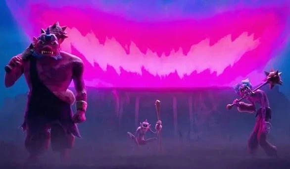
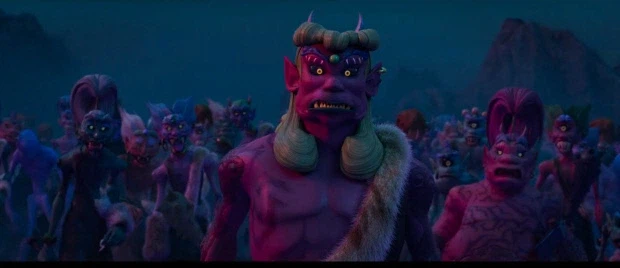
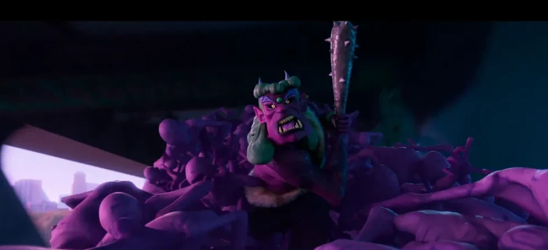
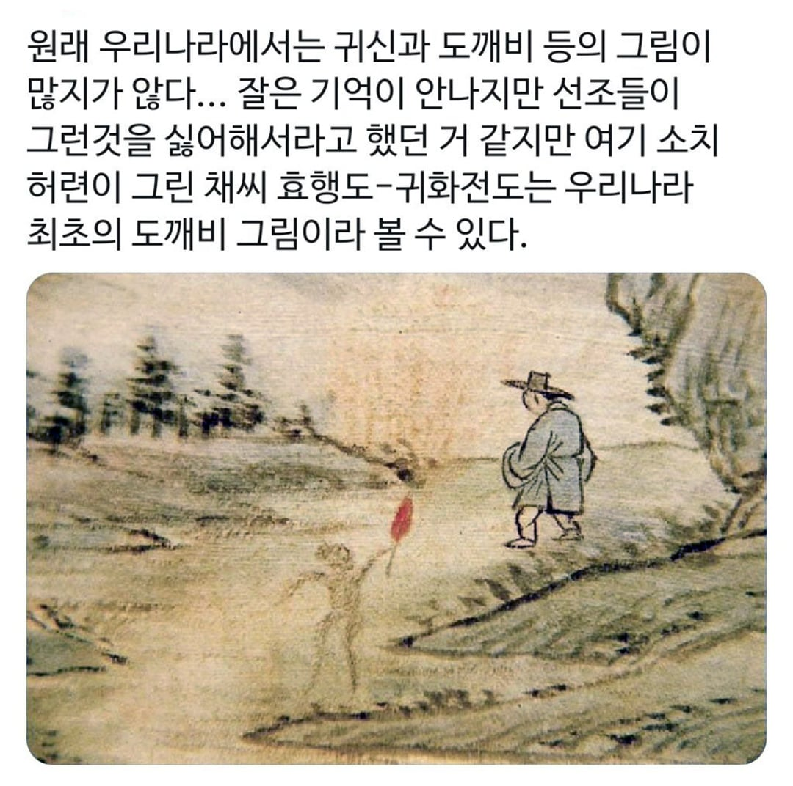

한국은 일본에게 두차례나 침략당한 역사가 있고 그 역사를 배경으로 일본 오니가 그때 한국으로 넘어온 설정 아니냐고 해석함

한국 도깨비는 일본 오니와 달리 뿔이 없으며
방망이또한 뿔 달린 쇠방망이를 들고다니지 않는다
씨름을 좋아하며 오니와 달리 사람을 괴롭히는 흉포한 성격이 아니다
물론 두억시니 같은 예외도 있지만 이건 야차에 더 가까운 종류다
도깨비 묘사는 일본 서브컬쳐 영향이 커서
국내에서도 제대로 묘사를 안하는 경우가 많다
그냥 묵이랑 술 씨름 좋아하는거 아니었냐?